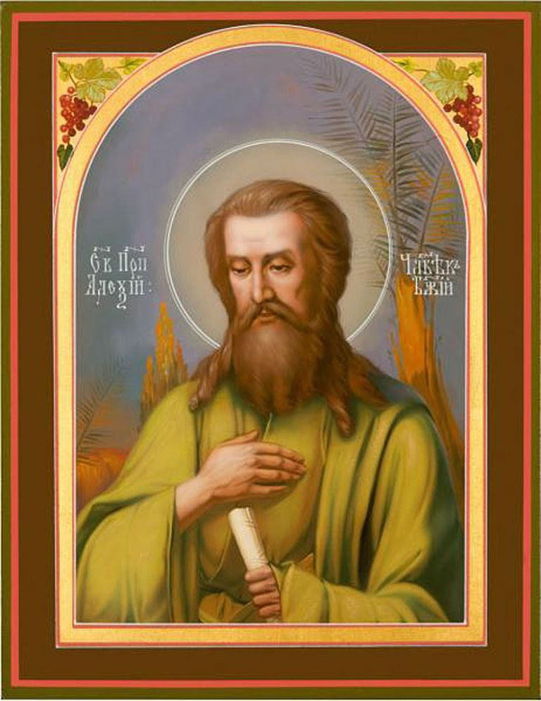

Избранный угодниче Христов, свыше нареченный человече Божий, святе Алексие, похвальное пение приносим ти, любовию чтущии твоя подвиги, терпение и многострадание, имиже Богу угодил еси и явился еси равноангелен на земли; ты же, яко имеяй дерзновение ко Господу, молитвами твоими от всяких нас бед свобождай, да зовем ти:
Радуйся, человече Божий Алексие, молитвенниче о душах наших.
Ангел земный и человек небесный был еси, Алексие блаженне, от младых бо лет жития твоего чистоту души и тела соблюл еси и Христу любовию усердною последовал еси, Егоже взыскуя, вся красная мира сего оставил еси и достигл еси совершенства духовнаго. Сего ради слышиши от нас сия достодолжныя тебе похвалы:
Радуйся, ветхаго Рима рождение; радуйся, безчадных родителей неплодия разрешение.
Радуйся, молитв усердных плод богодарованный; радуйся, от младенчества на богоугождение свыше предызбранный.
Радуйся, в страсе Божием добре воспитанный; радуйся, Закону Господню верно наученный.
Радуйся, о небесных паче, неже о земных, помышлявый; радуйся, самоотвержение чудное показавый.
Радуйся, чистоту девственную Христа ради непорочно сохранивый; радуйся, обручницу, красотою цветущую, Иисуса ради оставивый.
Радуйся, мудрый странниче, отечества горняго взыскавый; радуйся, Божий избранниче, вся прилоги мира, плоти и диавола победивый.
Радуйся, человече Божий Алексие, молитвенниче о душах наших.
Видев непостоянство красот мира сего, тлению причастных, Алексие богомудре, возлюбил еси блага нетленная вечная, Христом обетованная во Евангелии верным рабом Его; сего ради дом родителей твоих и все богатство их оставил еси, нищету же вольную избрал еси, да Христу угоден будеши и возможеши невозбранно пети Ему: Аллилуиа.
Разумел еси добре, Алексие блаженне, яко живя в мире, в супружестве и богатстве, неудобь обрящеши спасение; темже торжеству брачному приспевшу, ты брака внезапно уклонился еси, предпочитая в девственней чистоте Богу благоугождати. О сем дивимся и тебе зовем хвалебно:
Радуйся, Христов любителю, мрежею любве к миру сему неуловленный; радуйся, Иисусов последователю, плоти угождения избежавый.
Радуйся, высотою подвига твоего ангелы удививый; радуйся, крепостию произволения твоего демоны посрамивый.
Радуйся, град отечествия твоего оставивый, да Вышняго Града наследие обрящеши; радуйся, в путь далекий и многоскорбный потекий, да пути спасительнаго причастник будеши.
Радуйся, нищету самоизвольную себе усвоивый; радуйся, гладом и жаждею многажды томимый.
Радуйся, в молитвах деннонощных пребывавый; радуйся, слезами умиления лице твое орошавый.
Радуйся, терпения столпе непоколебимый; радуйся, веры адаманте крепкий.
Радуйся, человече Божий Алексие, молитвенниче о душах наших.
Силою Божиею укрепленный, путь далекий совершил еси и града Едеса достигл еси, Алексие достохвальне, в немже, яко един от нищих, пребывал еси в злострадании и нищете, ко храму Божию выну приметаяся и молитвы усердныя со многими слезами принося Христу, Царю и Богу, зовый: Аллилуиа.
Имел еси, святче Божий, небо покровом и землю одром упокоения, рубища же убогая одеянием многоподвижному твоему телу, зноем опаляему и мразом померзаему, емуже ни малаго угождения не попускал еси, да не возобладает плоть над духом твоим, любовию ко Господу пламеневшим. В таковем подвизе твоем едино утешение Христа имел еси, Иже и нам внушает вопити тебе:
Радуйся, от запада на восток пришедый взыскати Солнца Правды, Свет Невечерний; радуйся, Того во глубине твоего боголюбиваго сердца обретый.
Радуйся, светильниче Божественнаго сияния, мира концы озаривый; радуйся, твоими христопоследовательными стопами Едес освятивый.
Радуйся, правило веры истинныя; радуйся, образе нищеты духовныя.
Радуйся, в души твоей добродетели высокия возрастивый; радуйся, целомудрия сокровище драгое сохранивый.
Радуйся, Евангелия Христова добрый хранителю; радуйся, заповедей Иисусовых усердный исполнителю.
Радуйся, на земли небесно поживый; радуйся, Богу совершенно угодивый.
Радуйся, человече Божий Алексие, молитвенниче о душах наших.
Бурю страстей юношеских воздержанием укротил еси, святе Алексие, и постом сугубым увядил еси красоту лица твоего; темже возсия в души твоей нетленная красота благодатнаго безстрастия, благоугодная краснейшему паче сынов человеческих Христу, Емуже во умерщвленнем телеси сладце воспевал еси песнь хвалы и благодарения: Аллилуиа.
Слышав клирик церкве Едесския в видении глас от иконы Богоматере, человеком Божиим тя нарицающ, достойным Царствия Небеснаго, егоже молитва, яко кадило благовонное, восходит пред Лице Божие, и повелевающ ввести тя внутрь церкве от притвора, идеже нищетно пребывал еси, удивися зело таковей святости твоей, Алексие богоблаженне, и введ тя в церковь Господню, ублажаше тя звании сими:
Радуйся, Духа Святаго жилище, преукрашенное чистотою; радуйся, Божия благодати приятелище, сияющее добродетелей красотою.
Радуйся, Божия Матере словесы похваленный; радуйся, Царицею небесе и земли человеком Божиим наименованный.
Радуйся, имя новое и таинственное от Владычицы мира получивый; радуйся, смирением высокая стяжавый.
Радуйся, нищетою богатство нетленное снискавый; радуйся, почесть вышняго звания достойно восприявый.
Радуйся, молитв благоприятное кадило; радуйся, Царствия Горняго ревностный искателю.
Радуйся, в притворе церковнем дни и нощи молитвенно провождавый; радуйся, внутрь храма Божия повелением Богоматере честно введенный.
Радуйся, человече Божий Алексие, молитвенниче о душах наших.
Боготечней звезде уподобился еси, Алексие святе, егда избегая славы человеческия, от Едеса удалился еси во иныя страны, обаче Божиим Промыслом корабль, на немже плыл еси, ко отечественному твоему граду Риму принесеся. Ты же, познав в сем волю Господню тамо тебе подвизатися, притекл еси к дому родителей твоих, и, яко един от нищих, у врат его водворился еси, слезами омывая лице твое и вопия ко Господу: Аллилуиа.
Видев тя боголюбивый родитель твой, святе Алексие, странна и нища образом, милосердова о тебе и хижину малу повеле соорудити тебе у врат своего дома, в нейже питаше тя Христа ради, отнюд не познавая в тебе своего сына; ты же, нищетно в доме родительстем пребывая, всякую нужду странническую и поношение нищенское претерпел еси, подвизая ны благохвалити тя сице:
Радуйся, мужество великое показавый; радуйся, в терпении мнозем преуспевый.
Радуйся, в доме родителей твоих незнаемь пребывавый; радуйся, скорбь их о лишении твоем всегда созерцавый.
Радуйся, сетования отца твоего слышавый; радуйся, слезы матере твоея видевый.
Радуйся, плач обручницы твоея познавый; радуйся, сердце твое сими болезненно уязвлявый.
Радуйся, поношения и укоризны от слуг родителей твоих незлобно восприявый; радуйся, биения и заушения от них молчаливо переносивый.
Радуйся, за обидевшия тя непрестанно Бога умолявый; радуйся, самоизволен мученик воистину бывый.
Радуйся, человече Божий Алексие, молитвенниче о душах наших.
Проповедник евангельския кротости был еси, святе Алексие, образом жития твоего многотерпеливаго всем показуяй, яко вся возможна человеку о укрепляющем Бозе, Егоже силою в немощней плоти великия подвиги совершил еси и многая страдания претерпел еси любве ради Христовы, достойно и праведно воспевая Пресвятей Троице серафимскую песнь: Аллилуиа.
Возсиял еси в древнем Риме необычайными подвиги твоими, Алексие блаженне, и сими озарил еси благодатно всю Церковь Христову: кто бо не умилится, слыша твое пачеестественное терпение и многая злострадания, в доме родителей твоих восприятая самоизвольно, и како, наследник сый того дома, от слуг его укоризны и раны преносил еси радостно. Сего ради приносим ти от усердия нашего сия песноглашения:
Радуйся, великий угодниче Христов, в мире премирно поживый; радуйся, равноангельный слуго Господень, многоболезненно жизнь твою препроводивый.
Радуйся, безчестие в славу себе вменивый; радуйся, раны на теле твоем терпеливо носивый.
Радуйся, ланиты твоя от заушений не уклонивый; радуйся, плещи твоя на ударения предавый.
Радуйся, оплевания христоподражательно принимавый; радуйся, молчанием на укоризны отвещавый.
Радуйся, во Христе утешение едино обретавый; радуйся, воспоминанием крестных страданий Иисусовых скорби твоя услаждавый.
Радуйся, великодушный многострадальче; радуйся, добропобедный подвижниче.
Радуйся, человече Божий Алексие, молитвенниче о душах наших.
Хотение едино имел еси, человече Божий, еже благоугождати Богу; темже вся временная в уметы вменил еси и, наследник многаго богатства быв, сие оставил еси, нищ и странен пребывая, в родительстем доме непознаваем и зело уничижаем, присно воздыхая ко Господу и слезно моляся, да сподобит тя в стране блаженства вечнаго пети Ему со святыми: Аллилуиа.
Ново и необычайно течение совершил еси жития твоего, святе Алексие, среди мира чуждо мирских пристрастий и всякия скверны греховныя; темже приял еси в души твоей боговедения дар совершен и был еси одушевленный храм Трисияннаго Божества, в немже Христос со Отцем и Духом обитель Себе сотвори, нас же научи звати тебе:
Радуйся, ангелов подобниче и человеков красото; радуйся, ризу душевную девства чистотою убеливый.
Радуйся, в радость Господа твоего вшедый; радуйся, добровольною нищетою превозвышенный.
Радуйся, терпением твоим с многострадальным Иовом сравнивыйся; радуйся, уничижением твоим евангельскому Лазарю подражавый.
Радуйся, болезньми многими здравие души стяжавый; радуйся, страданьми неисчетными Царствие Христово приобретый.
Радуйся, ветхаго Рима благодатное обновление; радуйся, Церкве Христовы Божественное удобрение.
Радуйся, обетований Иисусовых наследниче; радуйся, Пресвятыя Троицы таинниче.
Радуйся, человече Божий Алексие, молитвенниче о душах наших.
Странник и пришлец был еси во граде отечествия твоего, святе, выну взыскуя Вышняго Града, Иерусалима Небеснаго; егдаже приспе время отшествия твоего к Богу, ты на хартии тайну жития твоего начертал еси, в познание твоим родителем, и неослабно пребывал еси в подвизех поста и молитвы, приуготовляяся ко исходу умиленным пением Богу: Аллилуиа.
Весь в Бозе быв, Алексие святе, молитве бывшей на устах твоих, предал еси праведную душу твою в руце Божии мирно и безмятежно, яко уснул еси; смерть бо тебе воистину упокоение бысть от страданий и подвигов непрестанных и прехождение от худшаго на лучшее. О таковем блаженнем успении твоем мы, радующеся, сия прикладныя тебе приносим глаголы:
Радуйся, святче Божий, свято и праведно жизнь земную совершивый; радуйся, во благоухании святыни сном смертным опочивый.
Радуйся, на лоно Авраама ангелы несенный; радуйся, пением неземным от святых Небожителей встреченный.
Радуйся, венцем безсмертныя жизни от Господа увенчанный; радуйся, во обители райския со славою восприятый.
Радуйся, Пресветлое Лице Владыки Христа выну созерцаяй; радуйся, Пресвятей Троице Трисвятую песнь немолчно возглашаяй.
Радуйся, Создателя горних и дольних молитвами твоими умилостивляяй; радуйся, весь мир христианский предстательством твоим объемляй.
Радуйся, ангелов и человеков радование; радуйся, почитающим святую память твою верный ходатаю.
Радуйся, человече Божий Алексие, молитвенниче о душах наших.
Вси людие римстии в трепет приидоша, слышавше глас в соборней церкви града своего, во время Божественныя Литургии свыше от олтаря глаголющ и повелевающ поискати тя, человече Божий, да молитв твоих сподобятся. Темже во удивлении и ужасе бывше, молитвенно возопиша они ко Господу, да явит им тебе, Своего избранника, зовуще дивному во святых Своих Владыце: Аллилуиа.
Витийство человеческое не довлеет к похвалению тебе, святе Алексие, свыше похваленному Гласом Божественным, Егоже извещением людие римстии обретоша тя, мертва лежаща на одре, с хартиею на лице, еже сияше солнцеподобными лучами, и благоухание велие исхождаше от многоподвижнаго твоего телесе. Темже обретением твоим обрадовани, царь, святитель и весь народ возгласиша тебе:
Радуйся, светлая луче Трисолнечнаго Света, оживляющаго весь мир; радуйся, деннице, возшедшая просвещати Церковь Христову многими чудесы.
Радуйся, святости и чистоты крине благоуханный; радуйся, дарований Божественных сокровище.
Радуйся, родителем твоим хартиею себе явивый; радуйся, плач их горестный на сладостный преложивый.
Радуйся, седины отца твоего прославлением твоим прославивый; радуйся, слезы матере твоея благодатно вознаградивый.
Радуйся, честную обручницу твою, верность тебе сохраньшую, духовно утешивый; радуйся, весь народ римский обретением твоим зело возвеселивый.
Радуйся, исцеления чудесная от святых мощей твоих обильно источивый; радуйся, на небеси и на земли почесть посмертную достойно восприявый.
Радуйся, человече Божий Алексие, молитвенниче о душах наших.
Спастися хотящим пример благий житие твое, святе Алексие, имже вся ны поучаеши отрешатися сует мира, искати же едино на потребу, еже есть богоугождение. Помози убо нам, человече Божий, в сем тебе подражати, укрепи немощное произволение наше, вдохни в нас мужество душевное, украси нас добродетельми и яви быти наследники Царствия Небеснаго, да с тобою на земли живых воспоем Создателю нашему: Аллилуиа.
Царя Небеснаго Христа верный последователь был еси, Алексие блаженне, егоже Страшному Престолу ныне предстоиши во славе небесней, о нейже мы, земнии и перстнии, ниже помыслити можем; обаче любовию усердною к тебе понуждаеми, мысленно созерцаем тя, горе за ны молящагося пред лицем Божиим, и бренными усты возсылаем ти пение таковое:
Радуйся, верно чтущим тя скорый помощниче; радуйся, молитвенно призывающих тя усердный заступниче.
Радуйся, праведниче Господень, Егоже Правда возсия немерцаемо; радуйся, соль земли, яже никогдаже обуяет.
Радуйся, добрыми делы твоими Бога прославивый и человеки удививый; радуйся, житием твоим ангелы возвеселивый и духи тьмы посрамивый.
Радуйся, Горняго Мира украшение; радуйся, дольняго мира защищение.
Радуйся, Рима славо и похвало; радуйся, христианскаго рода возвышение.
Радуйся, в чудесех просиявый; радуйся, в милостех неистощимый.
Радуйся, человече Божий Алексие, молитвенниче о душах наших.
Пение надгробное со славою тебе сотвориша, святе Алексие, царь, святитель и весь народ римский, родителем твоим и обручнице твоей, возследующим честному твоему гробу, несенному благолепно в соборную церковь, от негоже чудес множество источил еси: слепии прозираху, разслабленнии укрепляхуся, недужнии здрави бываху прикосновением к мощем твоим святым, воеже всем видящим таковая возглашати Богу: Аллилуиа.
Светло и радостно бысть погребение твое, человече Божий, светел бо лицем возлежал еси во гробе и благоухание сладостное испущал еси от нетленнаго твоего телесе, сими знаменуя светлость немерцающую святыя твоея души, в воню благоухания Христова притекшия и мира Божественнаго преисполненныя, от еяже полноты и в наша души подаждь даяние благодатное, да со утешением духовным тебе возопием:
Радуйся, свеще неугасимая, в молитвах к Богу горе возжженная; радуйся, лампадо златая, елеем милости долу живущих умащающая.
Радуйся, алавастре драгий, миро целебное болящим источаяй; радуйся, реко многоводная чудес.
Радуйся, иночествующим наставниче добраго подвига; радуйся, в мире живущим образе богоугождения.
Радуйся, зерцало чистое праведнаго жития; радуйся, пристанище благоотишное по Бозе упование на тя возложивших.
Радуйся, врагов невидимых крепкий противоборче; радуйся, ищущим спасения душевнаго благий споспешниче.
Радуйся, от небесных высот к земнородным милостивно приникаяй; радуйся, чтущих тя прошения скоро исполняяй.
Радуйся, человече Божий Алексие, молитвенниче о душах наших.
Благодать и милость испроси нам у Христа, Царя и Бога нашего, Алексие достохвальне; вемы бо, яко много может молитва твоя пред Лицем Его, и благоуветливо преклоняется Он к молению твоему. Темже усердно к тебе прибегаем и смиренно просим: окорми нас предстательством твоим в тихое пристанище Христово и сподоби наслаждатися нетленныя радости святых, немолчно вопиющих славословия песнь Триединому Богу: Аллилуиа.
Поюще подвиги многострадальнаго и предивнаго жития твоего, человече Божий, хвалим, славим и ублажаем тя усердною любовию, яко небеснаго многомощнаго предстателя нашего; ты же, святе, данною ти свыше благодатию нас, грешных и мрачных, освяти, просвети и настави вопити тебе неосужденно:
Радуйся, Востока незаходимаго присносияющая заре; радуйся, вселенную твоими чудесы исполнивый.
Радуйся, мощами твоими преславно чудотворяй; радуйся, образми подобия твоего предивная совершаяй.
Радуйся, болящих безмездный врачу; радуйся, скорбящих благий утешителю.
Радуйся, унывающих благодатное ободрение; радуйся, изнемогающих внезапное укрепление.
Радуйся, бедствующим на помощь ускоряяй; радуйся, от жития отходящим заступление твое многомощное являяй.
Радуйся, радости духовныя боголюбивым душам подателю; радуйся, благ временных и вечных усердный нам у Господа просителю.
Радуйся, человече Божий Алексие, молитвенниче о душах наших.
О, святый и богопрославленный человече Божий Алексие! Тебе, горе за ны молящемуся пред Престолом Господа Славы, мы грешнии, долу живущии, сие малое приносим пение, молимся от всея души и от всего помышления: молитвами твоими испроси нам у Христа Бога прощение согрешений и по кончине нашея жизни приятие в блаженныя обители Небеснаго Царствия, да с тобою во веки поем Ему: Аллилуиа.
Этот кондак читается трижды, затем икос 1-й «Ангел земный...» и кондак 1-й «Избранный угодниче Христов...».
О, великий Христов угодниче, святый человече Божий Алексие, душею на Небеси Престолу Господню предстояй, на земли же данною ти свыше благодатию различная совершаяй чудеса! Призри милостиво на предстоящия святей иконе твоей люди, умиленно молящияся и просящия от тебе помощи и заступления. Простри молитвенно ко Господу Богу честнии руце твои и испроси нам от Него оставление согрешений наших вольных и невольных, в недузех страждущим исцеление, напаствуемым заступление, скорбящим утешение, бедствующим скорую помощь, всем же, чтущим тя, мирную и христианскую живота кончину и добрый ответ на страшнем Суде Христове. Ей, угодниче Божий, не посрами упования нашего, еже на тя по Бозе и Богородице возлагаем, но буди нам помощник и покровитель во спасение, да, твоими молитвами получивше благодать и милость от Господа, прославим человеколюбие Отца и Сына и Святаго Духа, в Троице славимаго и покланяемаго Бога, и твое святое заступление, ныне, и присно, и во веки веков. Аминь.
☧